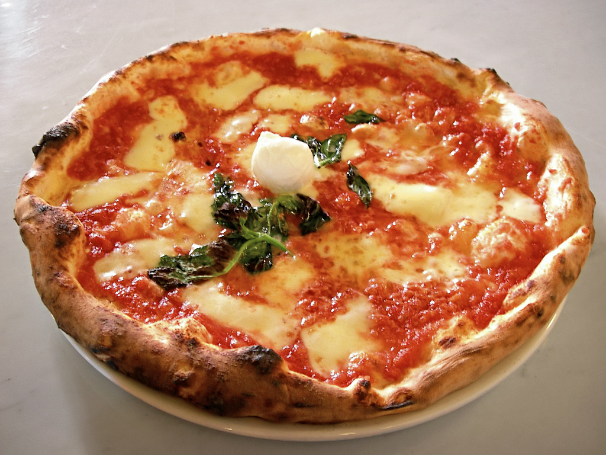

Home
Pizza recipe

Italian styled Pizzas
The ingredients:
1 ¾ cups hot water
3 tablespoons olive oil, or more to taste
2 tablespoons quick-rise yeast
1 tablespoon white sugar
1 teaspoon salt
3 cups all-purpose flour, plus more as needed
Steps:
Step 1: Beat water, olive oil, yeast, sugar, and salt together with an electric mixer until evenly combined, about 2 minutes.
Step 2: Add flour, 1 cup at a time, stirring with a wooden spoon after each addition, until dough almost comes away from the sides of the bowl.
Step 3: Knead the dough with your hands until soft and smooth.
Step 4: Lightly oil a bowl and place dough in the bowl, flipping to coat all of the dough.
Step 5: Let dough rest for 5 to 10 minutes.